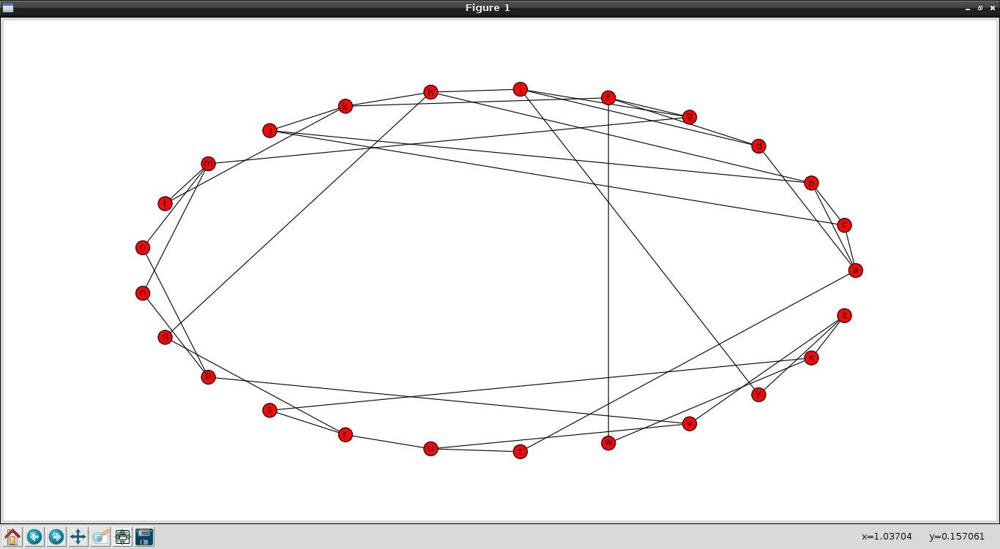
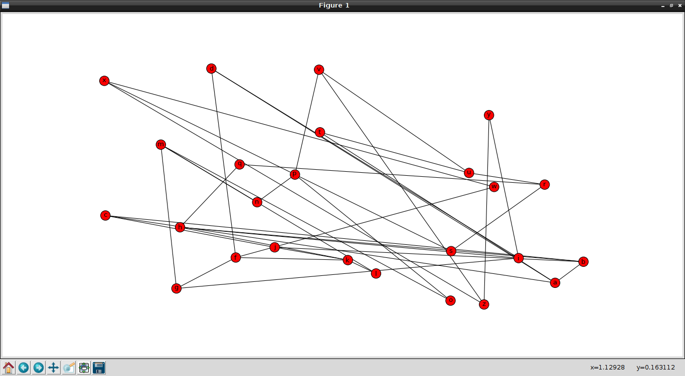

Creación de grafos con networkx. Parte 3.
Posted on mié 13 febrero 2013 in Tutorial Python • 4 min read
En el artículo anterior se muestra como crear grafos a partir del contenido de un archivo, en el primero se explica lo básico en la creación de grafos, en este se tocará el tema de analizar los grafos, de extraer información de los mismos.
El ejemplo a continuación se crea un grafo con varios nodos (de la "a" a la "z"), se enlazan todos los nodos, luego se muestra la cantidad de nodos, la cantidad de relaciones entre nodos, se le asigna un atributo a un nodo, un atributo entre 2 nodos, se averigua los vecinos de un nodo, el valor del atributo de un nodo, entre 2 nodos, se muestra también la ruta más corta para llegar del nodo m al b; cual es el promedio de la ruta más corta, se muestra la relación de los nodos con respecto a m, cual es la ruta más corta utilizando el Algoritmo de Dijkstra entre m y b. Para terminar se genera el grafo con varios métodos (espectral, aleatoria, circular y normal).
A continuación el código: ```python
!/usr/bin/env python
import networkx as net
Se importa la libreria pyplot de matplotlib como plt
import matplotlib.pyplot as plt
Se crea la instancia vacia del grafo
g=net.Graph()
Se crean los nodos con sus relaciones
g.add_edge('a','b')
g.add_edge('b','c')
g.add_edge('c','a')
g.add_edge('a','d')
g.add_edge('f','d')
g.add_edge('g','f')
g.add_edge('h','b')
g.add_edge('i','h')
g.add_edge('i','g')
g.add_edge('j','c')
g.add_edge('k','j')
g.add_edge('l','k')
g.add_edge('m','l')
g.add_edge('k','h')
g.add_edge('i','d')
g.add_edge('f','k')
g.add_edge('m','g')
g.add_edge('n','m')
g.add_edge('o','m')
g.add_edge('p','o')
g.add_edge('q','h')
g.add_edge('r','q')
g.add_edge('s','r')
g.add_edge('t','a')
g.add_edge('u','t')
g.add_edge('v','u')
g.add_edge('j','b')
g.add_edge('w','f')
g.add_edge('x','w')
g.add_edge('y','i')
g.add_edge('z','y')
g.add_edge('n','p')
g.add_edge('z','x')
g.add_edge('z','v')
g.add_edge('s','x')
g.add_edge('p','v')
g.add_edge('r','u')
print "Nodos: ",g.nodes()
print "Relaciones: ",g.edges()
Se define un tamagno al nodo a y un peso a la relacion entre el nodo a y b
g.node['a']['size']=1
g['a']['b']['weight']=1
print "Vecinos de m: ", g.neighbors('m')
print "Valor del nodo a: ",g['a']
print "Peso de la relacion entre a y b: ", g['a']['b']
print "Ruta mas corta entre m y b: ",net.algorithms.shortest_path(g,'m','b')
print "Promedio de la ruta mas corta ",net.algorithms.average_shortest_path_length(g)
print "Muestra la relacion de ruta mas corta entre pares de nodos relacionado con m: ", net.algorithms.all_pairs_shortest_path(g)['m']
print "Ruta mas corta usando el algoritmo de Dijkstra entre m y b:",net.algorithms.dijkstra_path(g, 'm', 'b')
Se dibuja el grafo
net.draw(g)
net.draw_spectral(g)
net.draw_circular(g)
net.draw_random(g)
Se muestra el grafico
plt.show() ```
Para generar el grafo de forma espectral, circular o aleatoria se comenta el anterior y se descomenta el que se desea generar.
El grafo normal se muestra en la siguiente figura:

A continuación se muestra el grafo espectral:

A continuación se muestra el grafo circular:

A continuación se muestra el grafo aleatorio:

A parte de las gráficas se imprime lo siguiente en pantalla:
``` Nodos: ['a', 'c', 'b', 'd', 'g', 'f', 'i', 'h', 'k', 'j', 'm', 'l', 'o', 'n', 'q', 'p', 's', 'r', 'u', 't', 'w', 'v', 'y', 'x', 'z']
Relaciones: [('a', 'c'), ('a', 'b'), ('a', 'd'), ('a', 't'), ('c', 'b'), ('c', 'j'), ('b', 'h'), ('b', 'j'), ('d', 'i'), ('d', 'f'), ('g', 'i'), ('g', 'm'), ('g', 'f'), ('f', 'w'), ('f', 'k'), ('i', 'y'), ('i', 'h'), ('h', 'q'), ('h', 'k'), ('k', 'j'), ('k', 'l'), ('m', 'o'), ('m', 'l'), ('m', 'n'), ('o', 'p'), ('n', 'p'), ('q', 'r'), ('p', 'v'), ('s', 'x'), ('s', 'r'), ('r', 'u'), ('u', 't'), ('u', 'v'), ('w', 'x'), ('v', 'z'), ('y', 'z'), ('x', 'z')]
Vecinos de m: ['o', 'l', 'g', 'n']
Valor del nodo a: {'c': {}, 'b': {'weight': 1}, 'd': {}, 't': {}}
Peso de la relacion entre a y b: {'weight': 1}
Ruta mas corta entre m y b: ['m', 'l', 'k', 'h', 'b']
Promedio de la ruta mas corta 2.99
Muestra la relacion de ruta mas corta entre pares de nodos relacionado con m: {'a': ['m', 'g', 'i', 'd', 'a'], 'c': ['m', 'l', 'k', 'j', 'c'], 'b': ['m', 'g', 'i', 'h', 'b'], 'd': ['m', 'g', 'i', 'd'], 'g': ['m', 'g'], 'f': ['m', 'g', 'f'], 'i': ['m', 'g', 'i'], 'h': ['m', 'g', 'i', 'h'], 'k': ['m', 'l', 'k'], 'j': ['m', 'l', 'k', 'j'], 'm': ['m'], 'l': ['m', 'l'], 'o': ['m', 'o'], 'n': ['m', 'n'], 'q': ['m', 'g', 'i', 'h', 'q'], 'p': ['m', 'o', 'p'], 's': ['m', 'g', 'f', 'w', 'x', 's'], 'r': ['m', 'g', 'i', 'h', 'q', 'r'], 'u': ['m', 'o', 'p', 'v', 'u'], 't': ['m', 'g', 'i', 'd', 'a', 't'], 'w': ['m', 'g', 'f', 'w'], 'v': ['m', 'o', 'p', 'v'], 'y': ['m', 'g', 'i', 'y'], 'x': ['m', 'g', 'f', 'w', 'x'], 'z': ['m', 'o', 'p', 'v', 'z']}
Ruta mas corta usando el algoritmo de Dijkstra entre m y b: ['m', 'g', 'i', 'h', 'b']
```
De esta forma se puede extraer información del grafo como la ruta más corta entre m y b (m,g,i,h y b) que se tiene el mismo resultado usando el Algoritmo de Dijkstra.
¡Haz tu donativo! Si te gustó el artículo puedes realizar un donativo con Bitcoin (BTC) usando la billetera digital de tu preferencia a la siguiente dirección: 17MtNybhdkA9GV3UNS6BTwPcuhjXoPrSzV
O Escaneando el código QR desde la billetera: